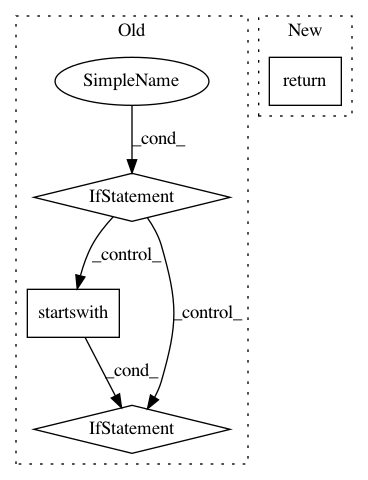

32c7b798be930eb48ed052bd3254cbe4310b87f6,mvpa2/datasets/sources/openfmri.py,OpenFMRIDataset,get_bold_run_ids,#OpenFMRIDataset#,113
Before Change
ids = []
task_prefix = _prefix("task", task)
bold_dir = _opj(self._basedir, _sub2id(subj), "BOLD")
if not os.path.exists(bold_dir):
return ids
for item in os.listdir(bold_dir):
if item.startswith("%s_" % (task_prefix,)) \
and os.path.isdir(_opj(bold_dir, item)):
ids.append(_id2int(item, strip=len(task_prefix) + 4))
return sorted(ids)
def get_task_bold_run_ids(self, task):
Return a dictionary with run IDs by subjects for a given task
After Change
Run ID
task_prefix = _prefix("task", task)
return _subdirs2ids(_opj(self._basedir, _sub2id(subj), "BOLD"),
"%s_" % (task_prefix,),
strip=len(task_prefix) + 4)
def get_task_bold_run_ids(self, task):
Return a dictionary with run IDs by subjects for a given task
In pattern: SUPERPATTERN
Frequency: 3
Non-data size: 4
Instances
Project Name: PyMVPA/PyMVPA
Commit Name: 32c7b798be930eb48ed052bd3254cbe4310b87f6
Time: 2014-10-30
Author: michael.hanke@gmail.com
File Name: mvpa2/datasets/sources/openfmri.py
Class Name: OpenFMRIDataset
Method Name: get_bold_run_ids
Project Name: tensorflow/hub
Commit Name: 6ea7bb25fe15a53b69245d2785b3efd064963ebc
Time: 2020-09-24
Author: no-reply@google.com
File Name: tensorflow_hub/resolver.py
Class Name:
Method Name: _merge_relative_path
Project Name: explosion/thinc
Commit Name: cecdbf1749ea34f7b39e244a6ebf662cef6a5009
Time: 2020-01-04
Author: ines@ines.io
File Name: thinc/layers/chain.py
Class Name:
Method Name: chain